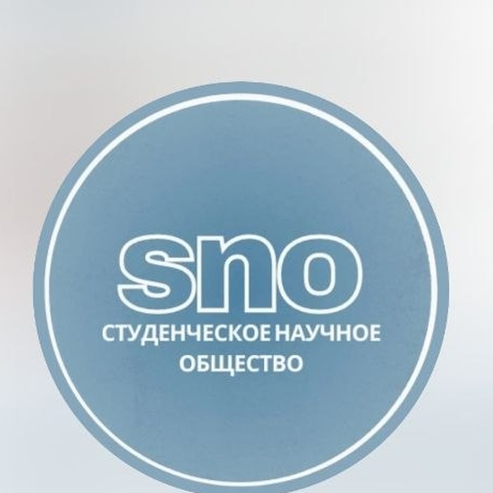

⚙️
Автоматизация
Повторяющиеся операции и обработка информации частично переходят к специализированным системам.

Роль юриста в эпоху искусственного интеллекта. ИИ уже меняет правовую работу, автоматизируя рутинные операции, но ответственность, проверка, этическая оценка и окончательное решение остаются за человеком.
Генеративный ИИ меняет традиционный подход к правовой работе: часть повседневной нагрузки передается программным инструментам, а юрист получает больше времени для стратегии, анализа доказательств и оценки перспектив спора.
Повторяющиеся операции и обработка информации частично переходят к специализированным системам.
ИИ помогает структурировать материалы, находить связи и готовить черновые варианты.
Юрист концентрируется на задачах, где необходимы контекст, профессиональная ответственность и человеческое суждение.
Работа юриста требует погружения в обстоятельства, учета нюансов и принятия решений в условиях неполной информации.
Право связано со справедливостью, добросовестностью и соразмерностью; ИИ не обладает собственной моральной позицией и эмпатией.
Качество ответа зависит от входных данных. Ошибочные или неполные сведения могут привести к неверным выводам.
Модель может быстро работать с текстом, но не гарантирует истинность утверждений и не заменяет профессиональную проверку.
Переключай вкладки, чтобы сравнить Китай и Испанию.
В материале описывается масштабное внедрение ИИ в судебную систему Китая. Система помогает с документами, поиском практики, анализом доказательств и подсказками судье.
При этом все выводы ИИ носят рекомендательный характер, а судья остается автономным субъектом.
Испания поддерживает внедрение ИИ в правовую систему, но в материале акцентируется необходимость постепенного перехода с учетом кибербезопасности и грамотного обращения с ИИ.
LexNET долгое время был основным инструментом электронного документооборота в судах Испании. В предоставленном материале отмечается, что система подвергалась критике из-за ограниченной совместимости с современными сервисами, устаревшего интерфейса и недостаточной гибкости.
Citius позиционируется как более гибкая и технологичная платформа, способная адаптироваться к будущим задачам судебной и административной системы.
В материале приводится позиция судьи судебной коллегии по делам интеллектуальной собственности Верховного Суда Республики Беларусь Р. В. Козорезовой.
При внедрении ИИ в юридическую работу предлагается учитывать права человека, недискриминацию, качество и безопасность, прозрачность, беспристрастность, достоверность и контроль пользователем.
Возможные направления применения: техническая помощь судье, оценка доказательств и участие в рассмотрении дела. При этом окончательное решение остается за судьей, а выводы ИИ выполняют рекомендательную функцию.
Ключевая идея проекта — трансформация профессии: ИИ берет на себя часть рутинной нагрузки, а человек сохраняет ответственность за проверку, этическую оценку и итоговое решение.
ИИ может усилить юриста — но не заменить его профессиональное суждение.